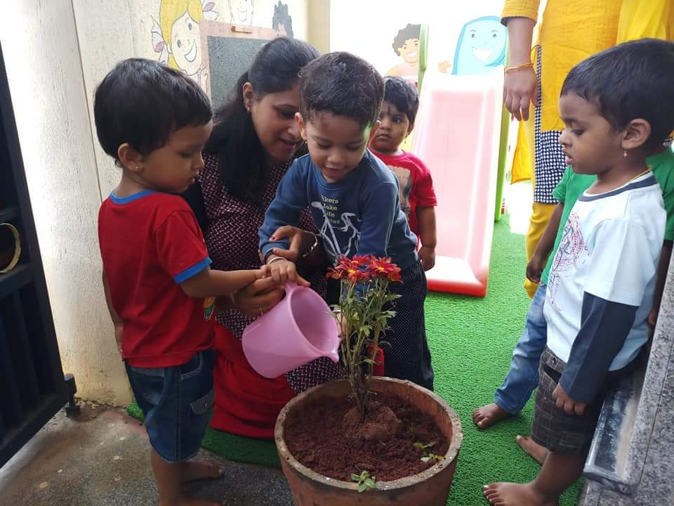
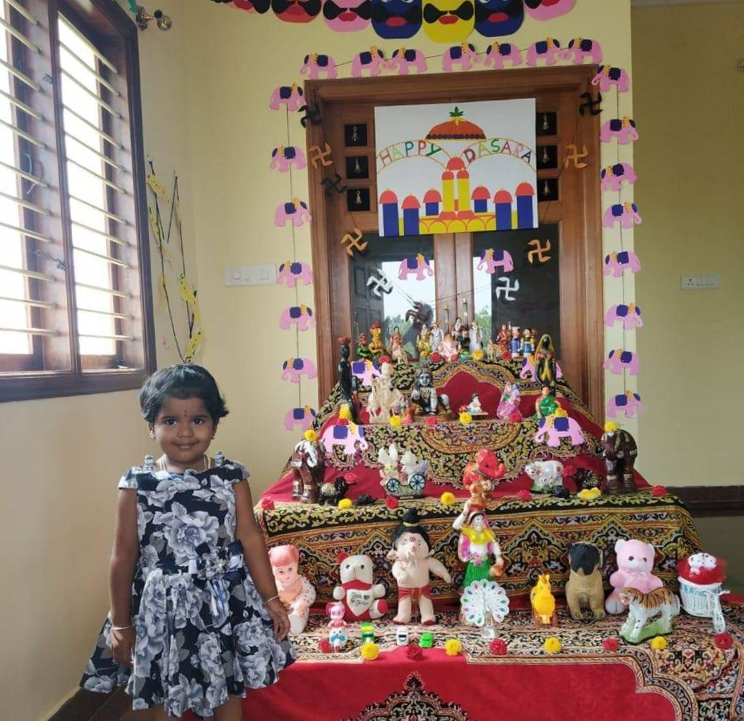
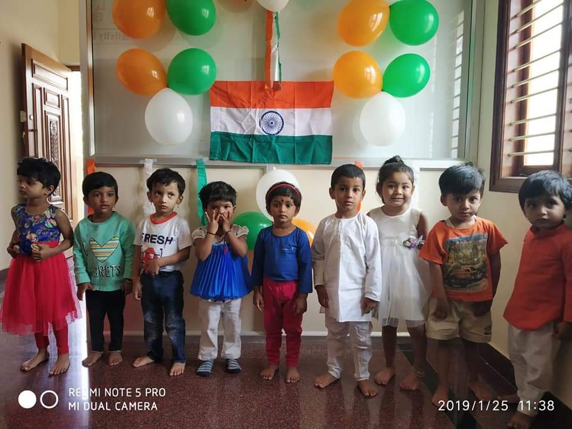
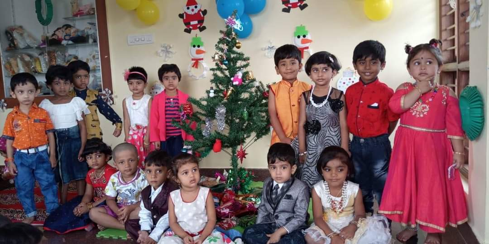

“Heal the world, make it a better place, for you and for me and the entire human race. There are people dying if you care enough for the living. Make it a better place for you and for me". All over the world 5th June is celebrated as the World Environment Day. On the occasion of World Environment Day, Little Flora PreSchool organized a tree plantation drive where they planted over a twenty-five trees and made a sincere effort in making earth a better place for the future generation.
In Southern India, the festival is known as Ayudha Puja where people celebrate and pay respect to their instruments. Here, vehicles, books, and musical instruments are kept in front of the deity and smeared with holy ash or sandalwood paste. Little Flora PreSchool celebrated Dasara with a unique exhibition of decorated dolls school that last for all nine days.
We all feel proud to be Indians, and it is equally important that such feelings are instilled in the future generation too. One of the best ways to do so is by telling the kids about the importance of Independence Day. Little Flora PreSchool Students of Nursery and LKG were dressed up as freedom fighters and national leaders. Students of class UKG sang patriotic songs.
The pre-schoolers came to school dressed in red colour for Christmas Fiesta. Some were also dressed as Santa Claus and gladly distributed toffees to their peers and teachers as well. the kids about the importance of Independence Day. The happy and festive atmosphere was quite apparent with snowflakes, red and white balloons and beautifully decorated Christmas trees all around the school premise. The day ended with Santa Claus visiting each class, giving gifts and sweets to children and dancing with them and wishing them Merry Christmas and Happy New Year.
